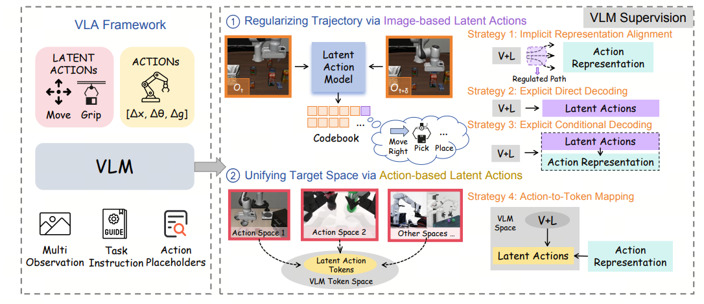
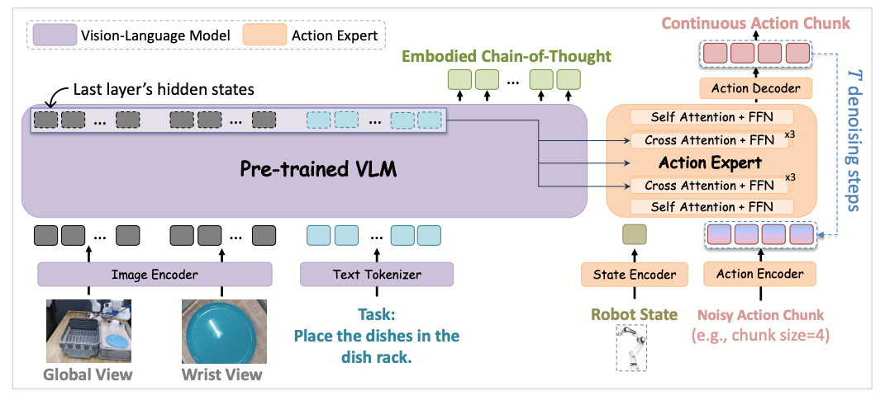
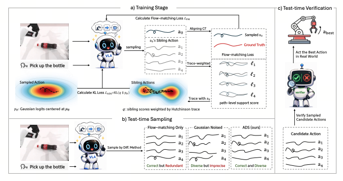
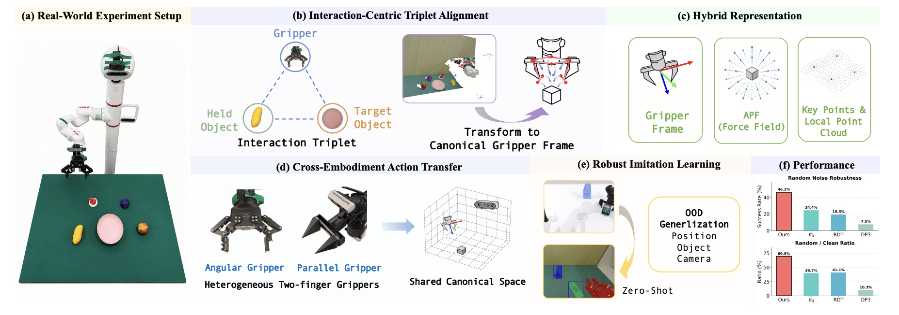
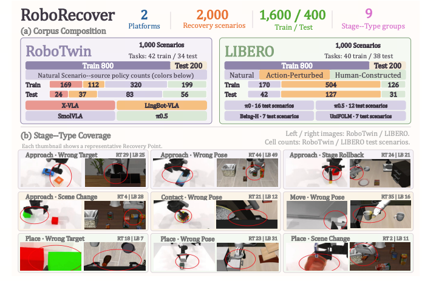
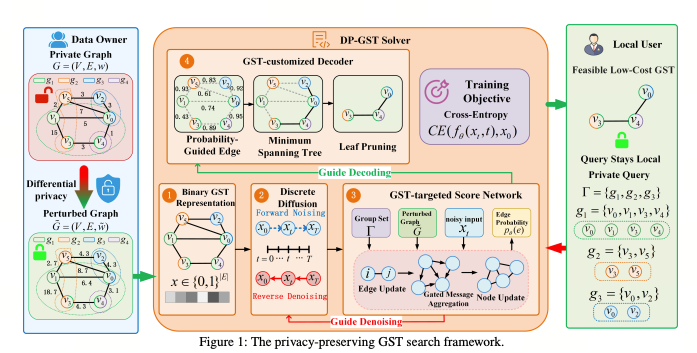
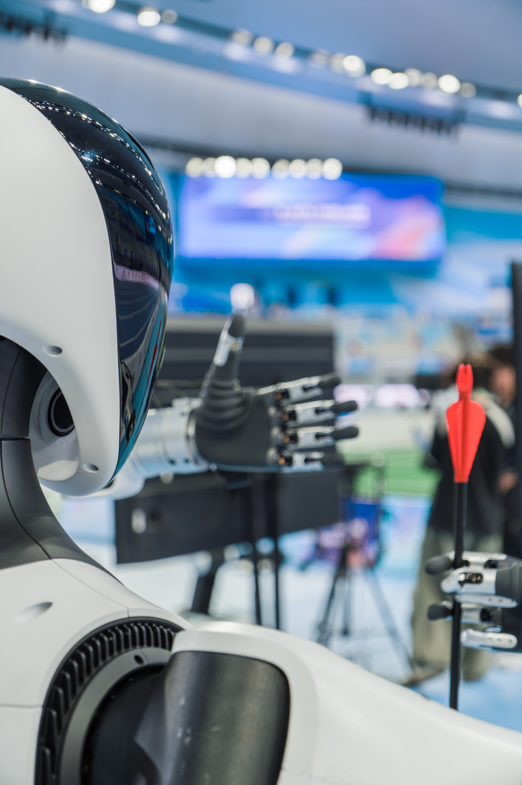
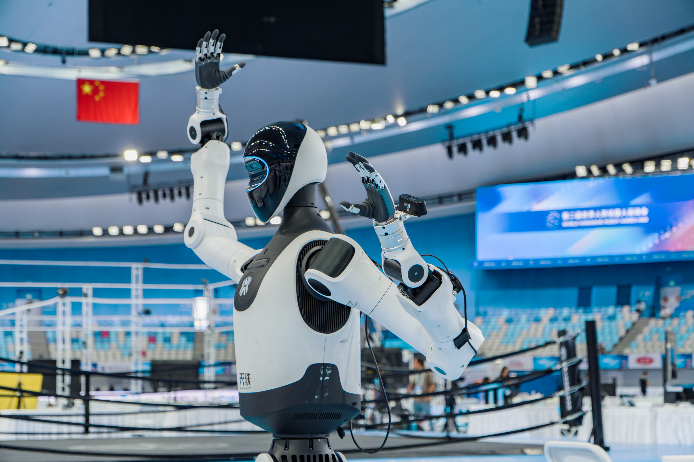
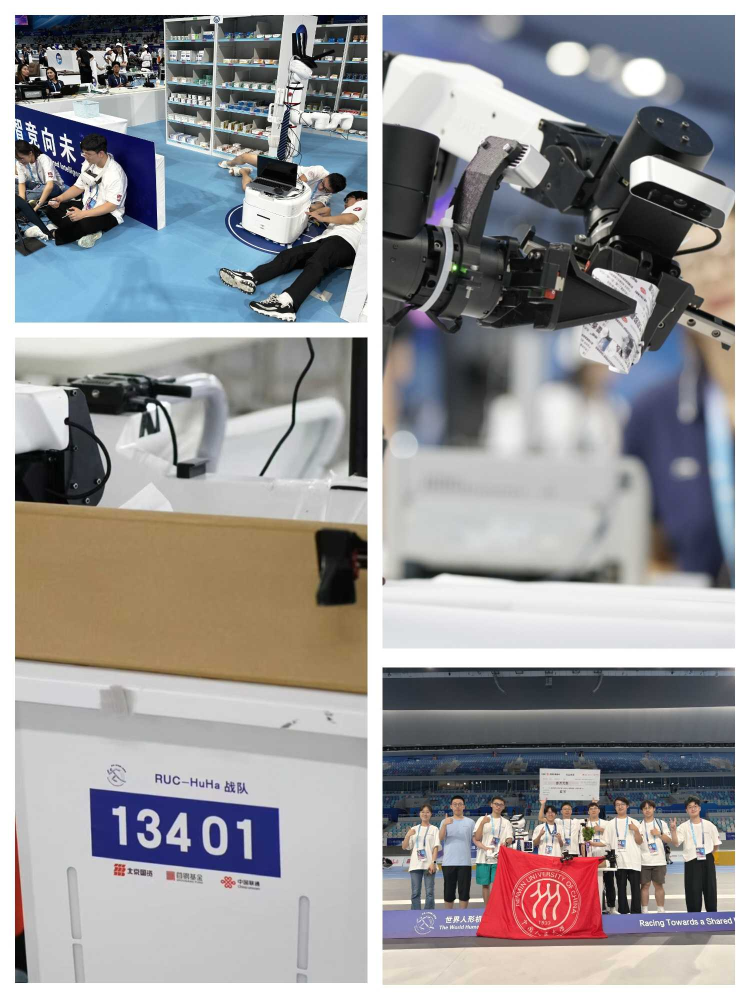

具身智能与 VLA 模型
关注面向具身智能体的视觉-语言-动作模型，包括潜在动作监督、动作 token 表示，以及感知、规划与底层控制之间的连接。
视觉-语言-动作 · 机器人学习
个人主页
研究生
中国人民大学信息学院
我是中国人民大学信息学院研究生，研究兴趣集中在具身智能、机器人学习以及视觉-语言-动作模型等方向。
近期工作关注 VLA 模型中的潜在动作监督、策略恢复、测试时验证以及密集具身思维链监督。
关注面向具身智能体的视觉-语言-动作模型，包括潜在动作监督、动作 token 表示，以及感知、规划与底层控制之间的连接。
研究通用机器人操作策略，尤其关注以交互为中心的表示与策略学习如何支持跨任务的稳健双指操作。
研究机器人策略在 clean-start 评估之外的行为，包括从执行偏差中恢复，以及测试时对候选动作进行验证。

ICML 2026 Spotlight
系统研究 VLA 模型中的潜在动作监督，在统一基线下比较基于图像和基于动作的 latent action 方案。

arXiv 2026
ZR-0 是一个 2.6B 端到端 VLA 模型，通过密集具身思维链监督进行训练，面向跨本体机器人学习。

ICLR 2027 投稿
该工作研究测试时验证的 VLA 策略，通过 flow-support-weighted proposals 提升动作多样性，同时保持动作正确性。

ICRA 2027 投稿
该工作研究面向双指夹爪操作的交互中心建模，旨在构建跨领域统一表示以支持机器人操作。

AAAI 2027 投稿
RoboRecover 评测机器人策略从执行偏差导致的中间状态中恢复的能力，补充传统 clean-start 成功率评估。

AAAI 2027 投稿
DP-GST 将图神经网络与扩散建模结合，用于差分隐私约束下的隐私保护群体 Steiner 树搜索。
机器人竞赛与相关奖项。
2026

投壶 - 银牌、铜牌
在投壶项目中获得银牌和铜牌。
2026

拔河 - 铜牌
在拔河项目中获得铜牌。
2025

场景赛-拆药分装 - 银牌
在场景赛拆药分装项目中获得银牌。
学术与教育背景
2026.9 - 至今
信息学院研究生
研究兴趣包括具身智能、VLA 模型、机器人学习与策略评测。
2022.9 - 2026.6
信息学院图灵实验班本科生
GPA：3.76/4.00。已保研至中国人民大学信息学院。